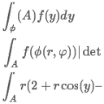
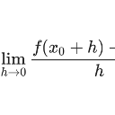
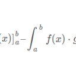
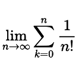

|
Warum ist Q abzählbar? |
Recent Posts all posts
|  |
Wie wendet man den Transformationssatz an? |
|  |
Wie zeige ich Differenzierbarkeit? |
|
|
Integration durch Substitution |
|  |
Partielle Integration |
|  |
Konvergenz von Reihen |
Konvergenz von Folgen |